¿Qué es un Map?
-
Un
Mapguarda pares clave → valor. -
Preserva el orden de inserción.
-
Las claves pueden ser de cualquier tipo (no solo strings).
-
Es iterable, lo que significa que puedes usar
for...of,forEach, etc.
Creación de un map
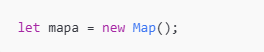
o inicializarlo
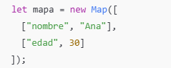
Añadir elementos
.set(clave, valor)
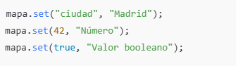
Acceder a elementos
.get(clave,valor)
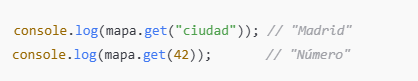
Comprobar si existe una clave
.has(clave)
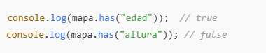
Eliminar una clave
.delete(clave)
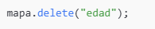
Vaciar todo el map
.clear()
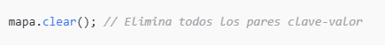
Saber cuántos elementos tiene
.size
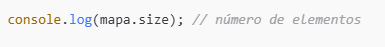
Iterar un map
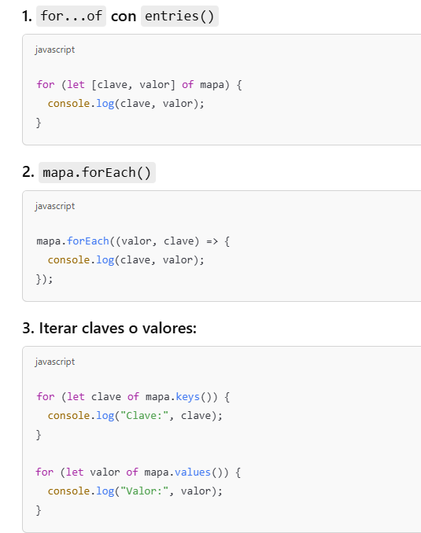
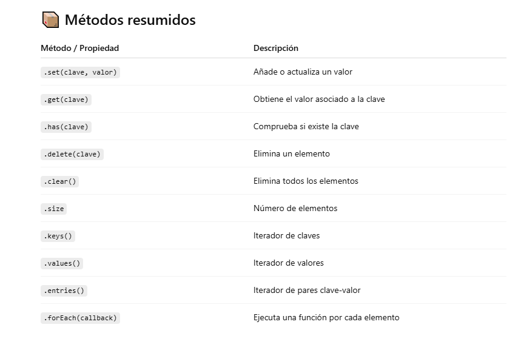
Ejemplo de map
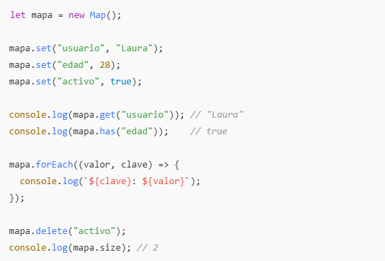
PROFUNDICEMOS MÁS EN MAP
Elegir un Map en JavaScript es ideal cuando necesitas una colección flexible, ordenada y eficiente para asociar claves a valores, especialmente cuando las claves no son necesariamente strings o cuando el orden de inserción importa. Aquí tienes las situaciones más comunes donde Map es la mejor opción:
✅ Cuándo usar Map en lugar de Object o Array
1. 🔑 Necesitas claves que no sean strings
-
Los objetos solo aceptan claves string o symbol.
-
Mappermite objetos, funciones, arrays, etc. como claves.
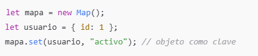
2. 📋 Quieres mantener el orden de inserción
-
Un
Mappreserva el orden de los elementos tal como se agregaron. -
Esto es útil cuando necesitas recorrer los datos en el mismo orden en que los guardaste.
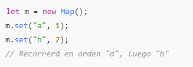
3. 🔁 Vas a iterar frecuentemente los elementos
-
Maptiene métodos de iteración nativos (forEach,for...of,.entries(), etc.). -
Más legible y directo que iterar sobre propiedades de objetos.
4. 📦 Necesitas trabajar con una gran cantidad de datos dinámicos
-
Mejor rendimiento que un objeto si vas a hacer muchas inserciones y eliminaciones dinámicas.
-
El método
.has()es más rápido y directo que usarinohasOwnProperty.
5. 🧪 Necesitas diferenciar entre claves con el mismo valor "string"
-
-
Las claves en un
Mapse comparan con===(igualdad estricta). -
Esto significa que
1y"1"son dos claves distintas. -
En cambio, en un objeto, todas las claves se convierten a strings, lo que puede causar confusiones.
Las claves de
Mappueden ser cualquier valor, y se comparan por identidad (===), no por conversión de tipo, es decir, map tiene la característica de que distingue entre claves que parecen iguales pero no lo son, gracias a que las compara usando identidad estricta (===) en lugar de forzar conversiones de tipo, como hacen los objetos.Recordatorio: Cómo compara
Maplas clave-
Las claves en un
Mapse comparan con===(igualdad estricta). -
Esto significa que
1y"1"son dos claves distintas. -
En cambio, en un objeto, todas las claves se convierten a strings, lo que puede causar confusiones.
-
-
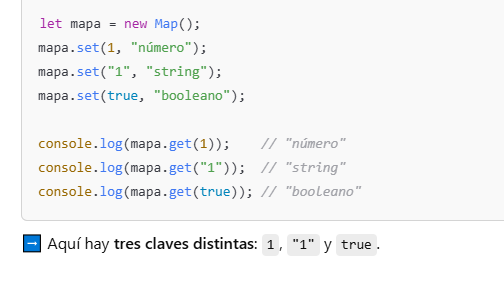
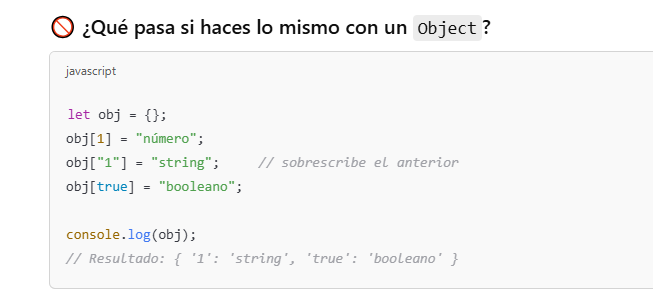
➡️ Aquí obj[1] y obj["1"] son la misma clave, porque el objeto convierte todo a string automáticamente. Pierdes información y puedes sobrescribir valores sin darte cuenta.
🎯 ¿Por qué es importante?
-
Si estás tratando con claves que no son strings, como números, booleanos u objetos, y necesitas distinguirlos con precisión, debes usar
Map. -
Esto es muy útil en casos avanzados, como:
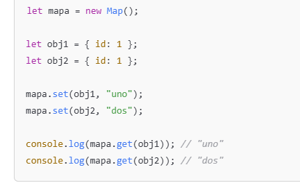
➡️ Aunque obj1 y obj2 tienen el mismo contenido, son dos objetos distintos en memoria, y Map los trata como claves diferentes. Esto no sería posible con un Object.
Conclusiones. Usa Map cuando:
-
Necesites claves que no sean strings.
-
Quieras mantener claves distintas aunque “se vean iguales”.
-
Te importe la comparación exacta (
===) y no quieras conversión de tipos.
6. 🧼 Quieres evitar conflictos con propiedades heredadas
-
Un objeto hereda de
Object.prototype, por lo que propiedades comotoStringpueden causar problemas. -
Mapno tiene este problema.
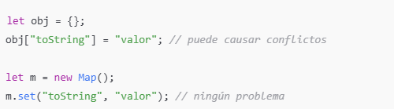
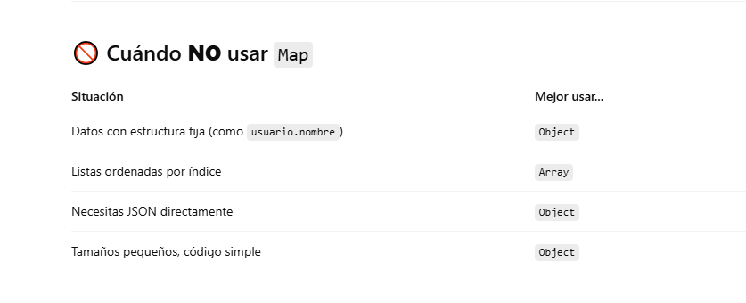